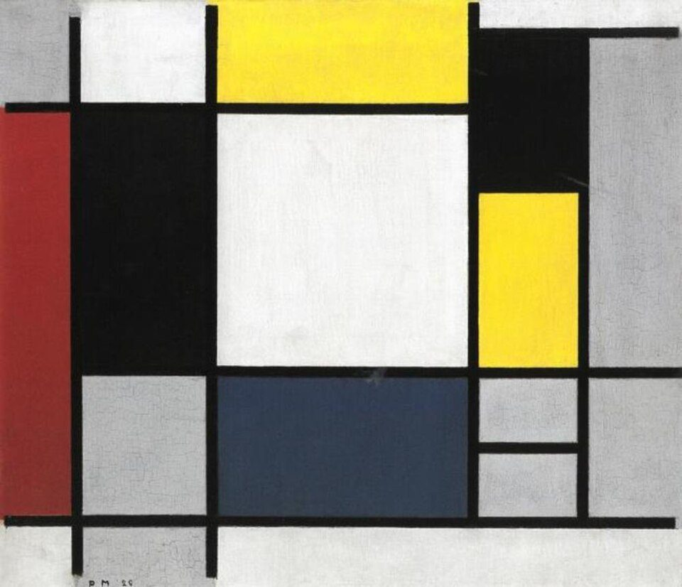

References / Painting / 147
Composition with Yellow, Red, Black, Blue, and Gray
One of the first paintings in Mondrian’s mature neoplastic manner: a white square at the center, ringed by black, gray, and primary planes, divided by black lines of one weight.
- Source
- Stedelijk Museum Amsterdam: Compositie met geel, rood, zwart, blauw en grijs
- Creator
- Piet Mondrian
- Made
- 1920
- Style
- De Stijl (agent-proposed, not yet reviewed by a person)
- Moods
- Balanced, austere, orthogonal
- Evidence
- Inspected the Wikimedia Commons image (from RKD image 218858; 1000 × 860 px, viewed at 960 px) of the painting in the Stedelijk Museum Amsterdam, object A 9864. The Stedelijk collection page renders with JavaScript and returned no text to the fetch tool.
- Reviewed
- Rights
- Open license, stored. License: public domain. Rights policy
Context
The Stedelijk Museum Amsterdam holds the painting as object A 9864, dated 1920. Wikidata Q24058759 gives the same number and date.
Commons lists it with Mondrian’s works of his second Paris period, 1920–1937. Commons.

Observed
- A large white square fills the center; a flat yellow plane sits above it and a dark, grayish blue plane below it.
- A tall red strip runs down the left edge; two large black planes flank the white square at left and top right.
- A second yellow plane stands at the right, above small light-gray cells; gray planes fill the corners.
- Black lines of about the same width divide every plane; several run to the edge of the canvas, and some stop short of it at the top and bottom.
- The initials and date “PM 20” are painted at lower left.
- Paint texture and fine cracks are visible in the white and gray planes.
Why it belongs
The blue is dark and gray, the red is a warm earth red, and black and gray planes cover as much area as the primaries. The pure, bright primaries of later “Mondrian” pastiche are not yet here.
The composition is centered on the white square but not symmetric: the color planes are distributed to the edges, which fits the rubric’s asymmetric balance.
Borrow
Put a large neutral plane at the center and push the colors to the edges.
Use black planes as well as black lines, so black carries weight, not only structure.
Measured
Machine-extracted by tools/image-traits.py on . Full measurement.
- Mean chroma
- 0.12
- Palette
- #f1f1ef 23%
- #141414 20%
- #b0b0b0 17%
- #fce430 10%
- #333e4e 9%
- #8e302d 7%
- #e0e1dd 5%
- #bdbdbd 5%

